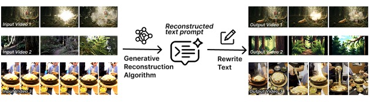
Sitong Wang
I am a final-year PhD student at Columbia CS , advised by Lydia Chilton. My work focuses on human-AI interaction, with an emphasis on multimodal and agentic AI. I design, build, and evaluate AI systems that support human creativity and productivity.
Previously, I interned twice at Adobe Research  with Dingzeyu Li, Anh Truong, and Mira Dontcheva on the video research team. I've also collaborated with Xiaojuan Ma at HKUST CSE and Panagiotis Apostolellis at UVA CS.
with Dingzeyu Li, Anh Truong, and Mira Dontcheva on the video research team. I've also collaborated with Xiaojuan Ma at HKUST CSE and Panagiotis Apostolellis at UVA CS.
I will be joining Microsoft Research Asia  this fall as a Senior Researcher on the Future Media Experience team. If you are interested in collaborating or would like to connect, please feel free to reach out!
this fall as a Senior Researcher on the Future Media Experience team. If you are interested in collaborating or would like to connect, please feel free to reach out!
Research
/
/
/
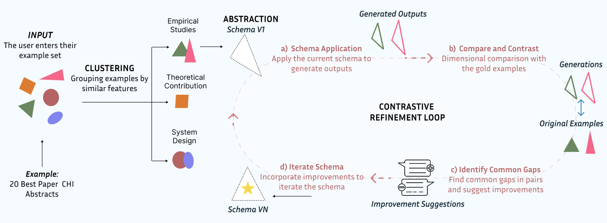
Under submission
Schemex: Discovering Structural Abstractions from Examples
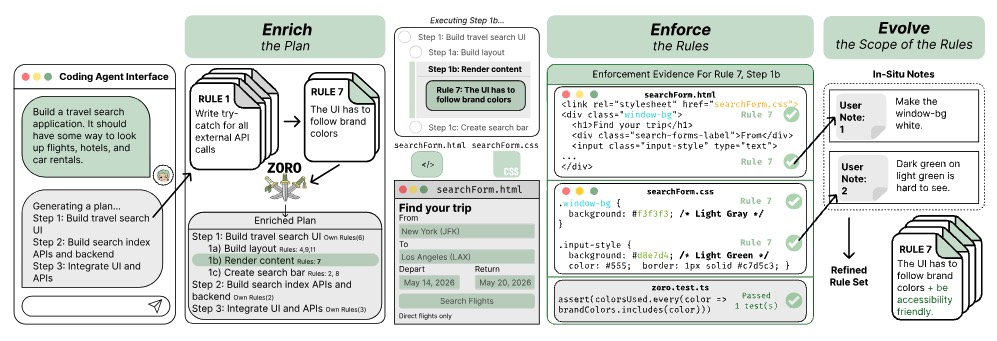
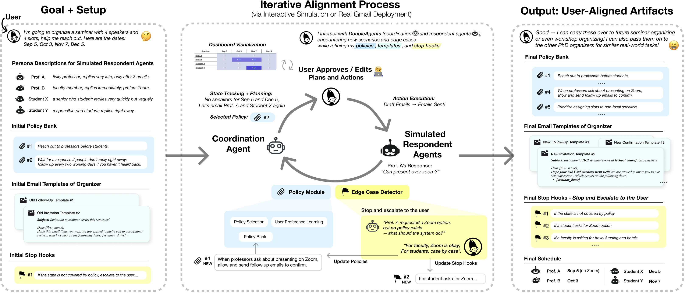
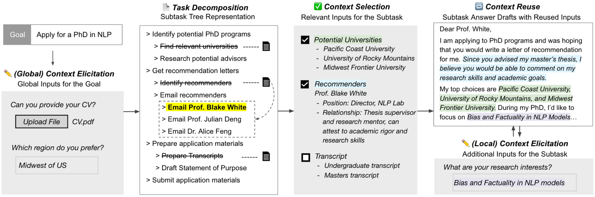
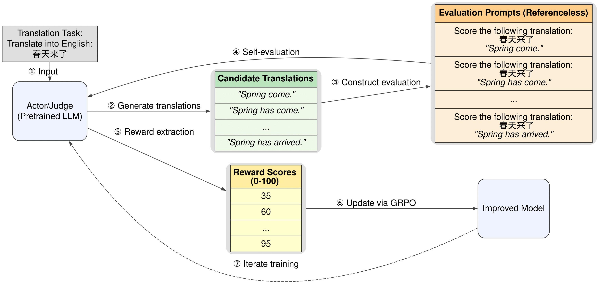
ACL 2026 Findings
SSR-Zero: Simple Self-Rewarding Reinforcement Learning for Machine Translation
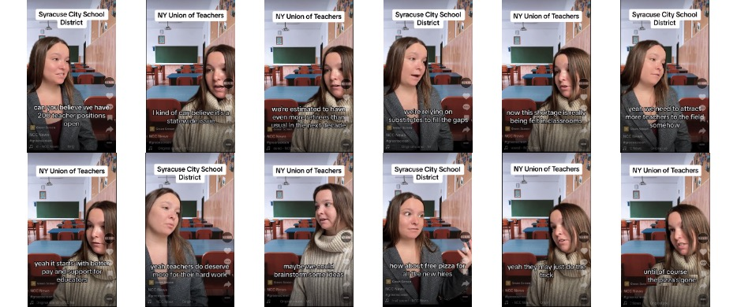
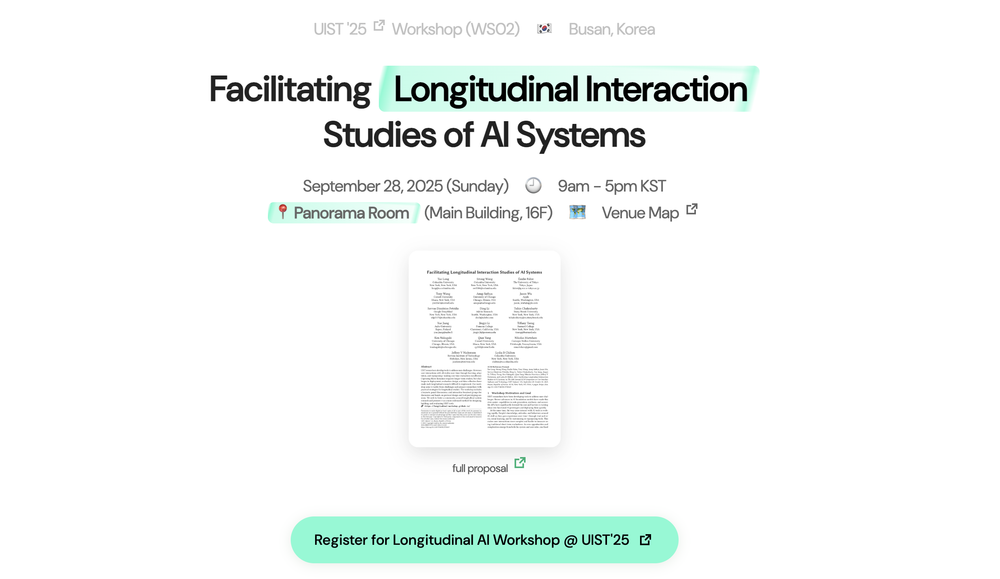
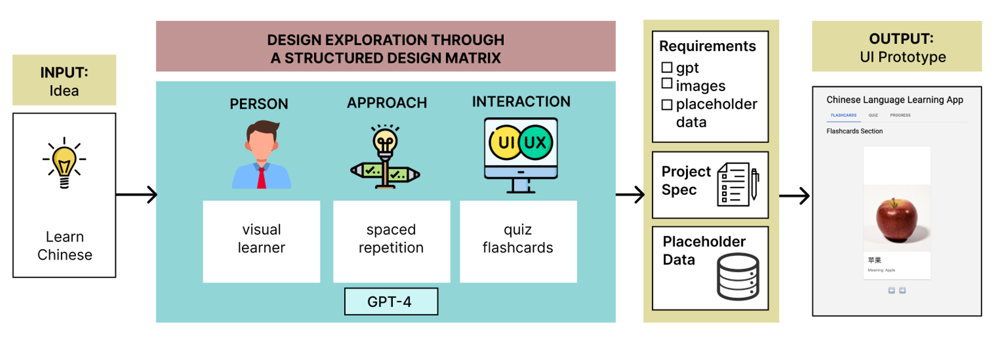
CHI 2025 ✨Best Paper Honorable Mention Award✨
DynEx: Dynamic Code Synthesis with Structured Design Exploration for Accelerated Exploratory Programming

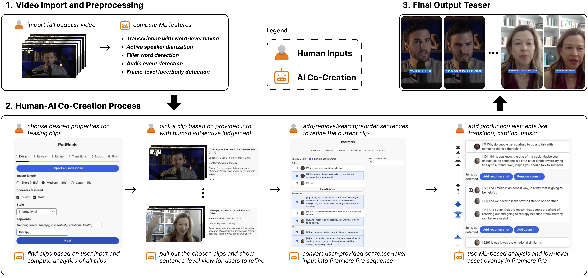
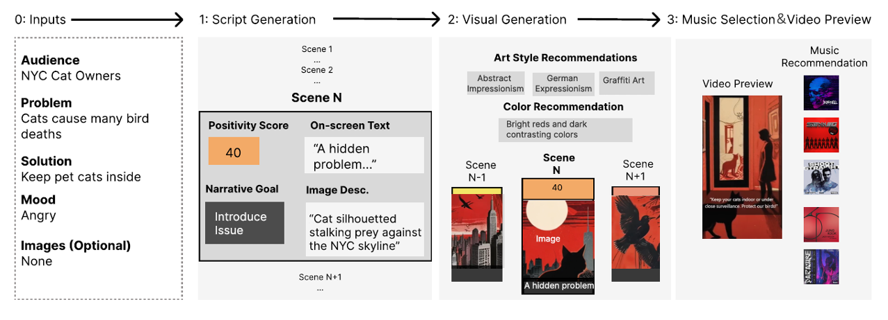
ICCC 2024
MoodSmith: Enabling Mood-Consistent Multimedia for AI-Generated Advocacy Campaigns
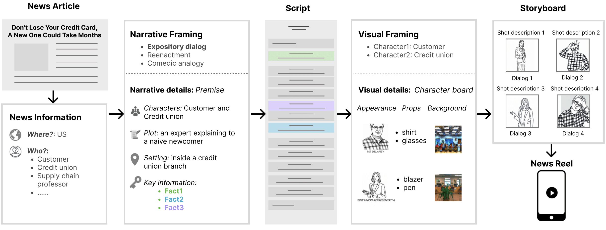
CHI 2024
ReelFramer: Human-AI Co-Creation for News-to-Video Translation
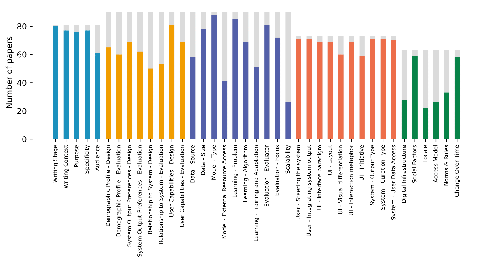
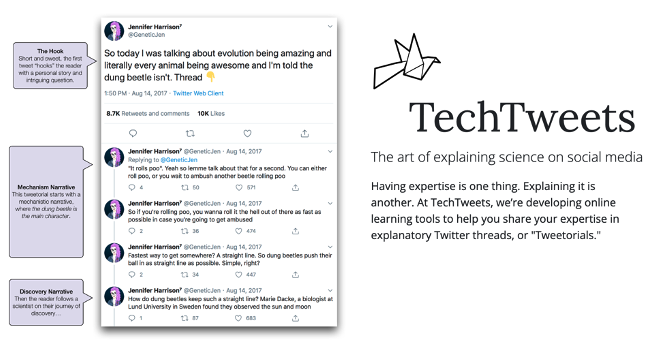
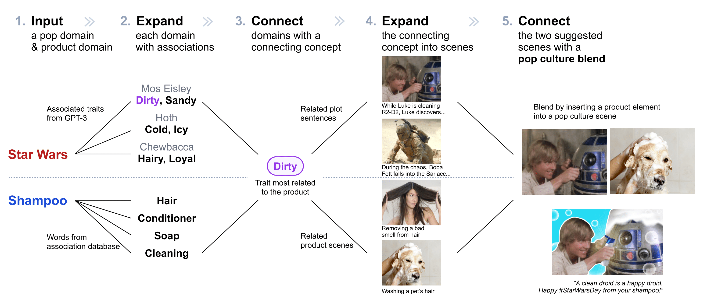
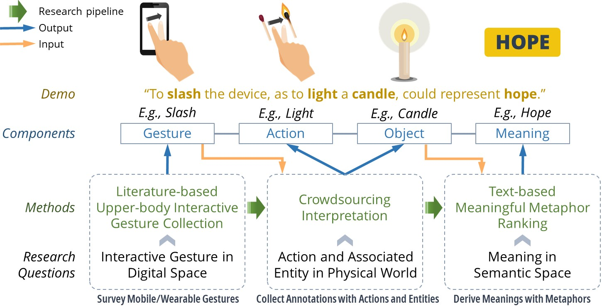
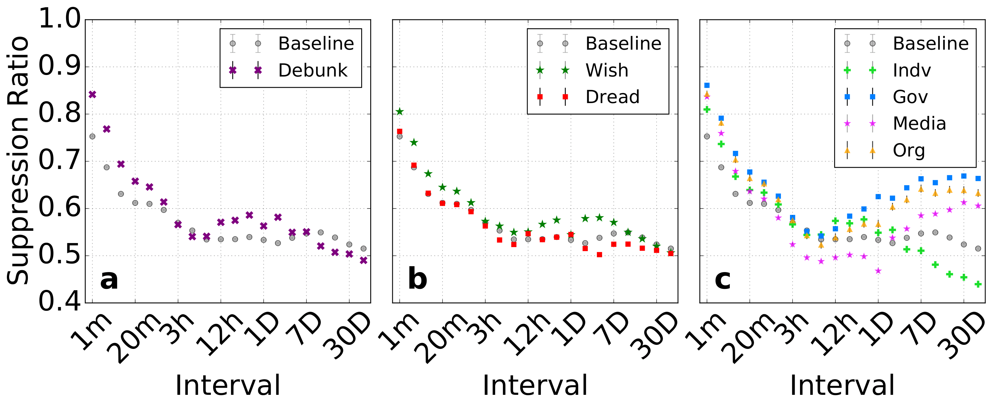
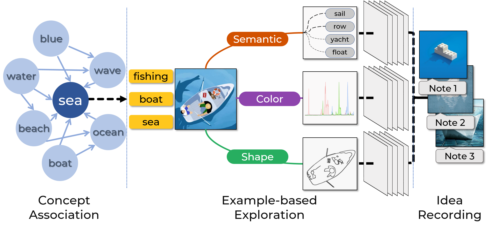
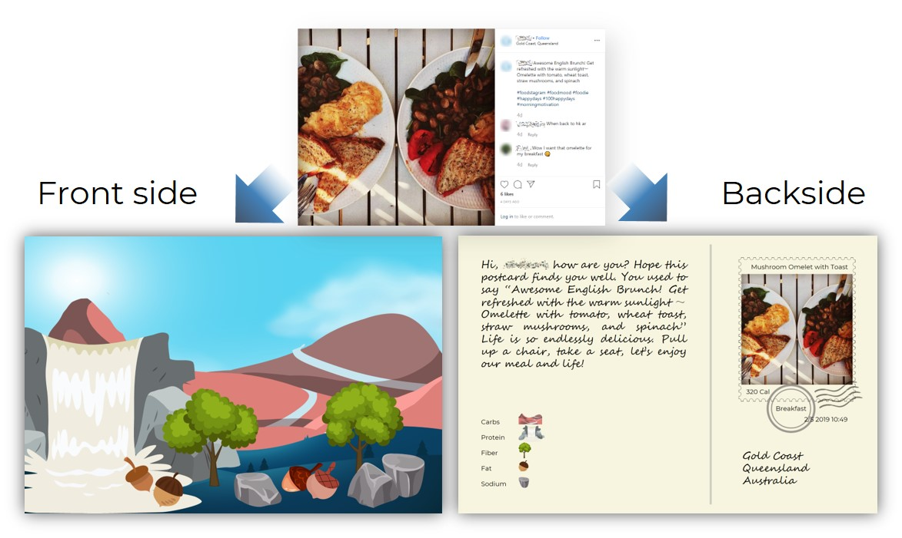
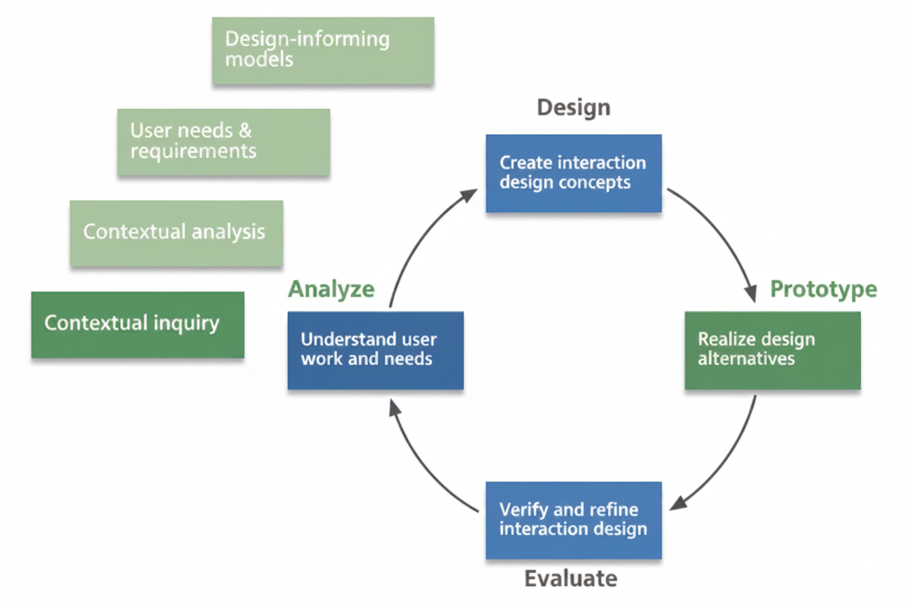
ASEE 2020
A Student Engagement Evaluation Methodology Inspired from Usability Engineering for Extracting Course Design Requirements
Awards and Honors
- IUI Best Paper Candidate (5%), 2026 Rewriting Video: Text-Driven Reauthoring of Video Footage
- CHI Best Paper Honorable Mention Award (5%), 2025 DynEx: Dynamic Code Synthesis with Structured Design Exploration for Accelerated Exploratory Programming
- Greenwoods Fellowship, 2022 Columbia University
- Google CS Research Mentorship Program, 2021 Google Research
Talks and Workshops
- Invited Talk, UC Berkeley (Berkeley Institute of Design), Feb 2026 Human-AI Schema Discovery and Application for Creative Problem Solving
- Invited Talk, Microsoft Research Asia, Dec 2025 Human-AI Schema Discovery and Application for Creative Problem Solving
- Workshop Co-Organizer, UIST 2025 Facilitating Longitudinal Interaction Studies of AI Systems
Mentoring
One of the most rewarding parts of my PhD has been mentoring these incredible students and seeing how they grow and thrive.
- Samia Menon (2023–2026): Columbia CS undergrad (Next: UC Berkeley EECS PhD)
- Gloria Guo (2024–2026): UW HCDE masters (Next: UCLA CS PhD)
- Jenny Ma (2024–2026): Columbia CS masters (Next: Columbia CS PhD)
- Grace Li (2023–2024): Barnard CS undergrad (Next: University of Chicago CS PhD)